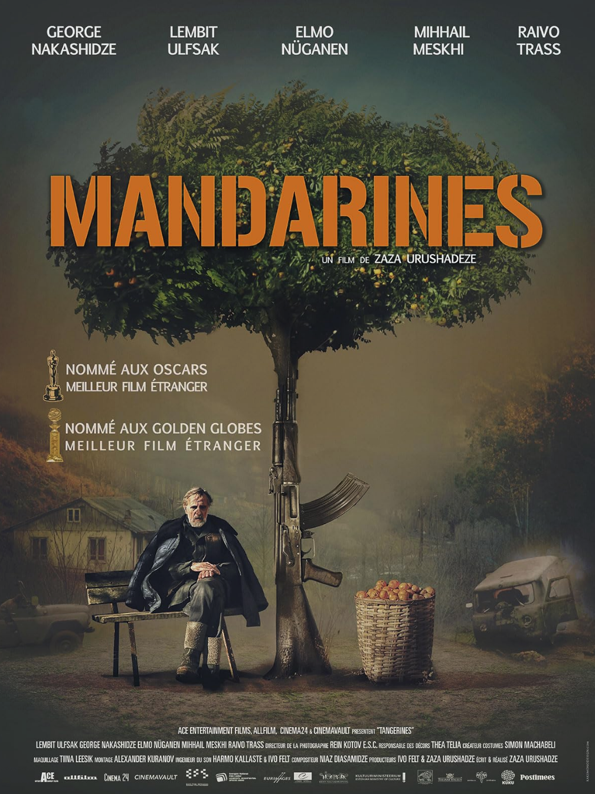

REES 201. Unit Three: State-building and Nation-building in post-Soviet Caucasus & Central Asia
Week 12
Nov 10. Guest Speaker: Professor Steve Hanson
Title: "State Building in Post-Soviet Russia"
Nov 12.
Watch for Nov 12: Prisoner of the Mountains (dir. Sergei Bodrov 1996)
Read: “Ellina Sattarova “Russia’s Quiet Other” in Cinemasaurus (BB)
Tags: violence, ethnic slurs, gender violence
Prepare a rough draft of your paper by November 12 and exchange feedback with a classmate in class.
By November 18th return the draft with the feedback to your classmate (thesis, structure, evidence, any stylistic suggestions).
Optional: watch for Nov 12 Soviet Western (Eastern) White Sun of the Desert
(dir. Vladimir Motyl 1969)
Online quiz
Week 13
Nov. 15
Melodia, the Eastern European Instrument and Vocal Ensemble,
is inviting you to attend the Spring concert at 3:00 PM on Sunday, November 15th! The performance will take place in Comey Recital Hall in the music building.
A link to the tickets (free admission) is attached below:
https://wm.universitytickets.com/w/event.aspx?id=2264
Nov. 17
Guest Talk: Professor Marta Koronkiewicz
(University of Wrocław, University of Illinois Chicago, Fulbright scholar)
Watch for Nov 17: Ashes and Diamonds (dir. Andrzej Wajda 1958)
Read for Nov 17: Stuart Liebman.
“The Art of Memory: Andrzej Wajda's War Trilogy” (on the BB)

Fig.1. Tangerines (2013)
Film Poster
Nov 19
Watch for October 29th: Tangerines (dir. Zaza Urushadze 2013)
https://www.youtube.com/watch?v=-5ROjuzpPoQ
Tags: violence, ethnic slurs, gender violence
Keywords:
Caucasus, Northern Caucasus, Southern Caucasus, Zakavkaz’e,
Chechnya, post-colonial, noble savage, orientalism
By November 18th return the draft with the feedback to your classmate
(thesis, structure, evidence, any stylistic suggestions).
Online quiz
Week 14.
State-building and Nation-building in post-Soviet Central Asia
Nov 24.
Read: Schatz, “Politics of Multiple Identities” (BB)
Write a post and submit via assignment link on the BB (at least 150 words)
How does Schatz explain the relationship between personal identity, collective belonging, and political action?
How can individuals hold multiple identities simultaneously, and under what circumstances might one identity become more politically significant than others?
Discuss a concrete example from Russia, Eastern Europe, or another post-Soviet society to illustrate how competing or overlapping identities shape political attitudes, social divisions, or national belonging.